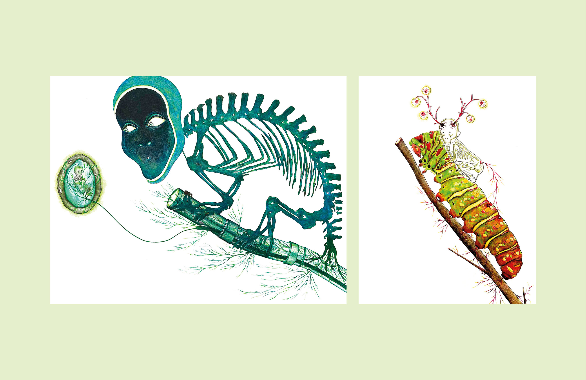

Symbiose
Technique : Crayon de couleur
Format : 29,7 × 42 cm
Ces illustrations explorent la symbiose à travers des associations entre formes organiques, être vivant et squelette. Un univers graphique qui oscille entre vie et mort, évoquant les liens et les transformations du vivant.
